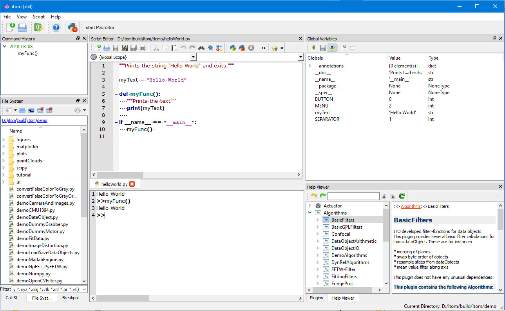
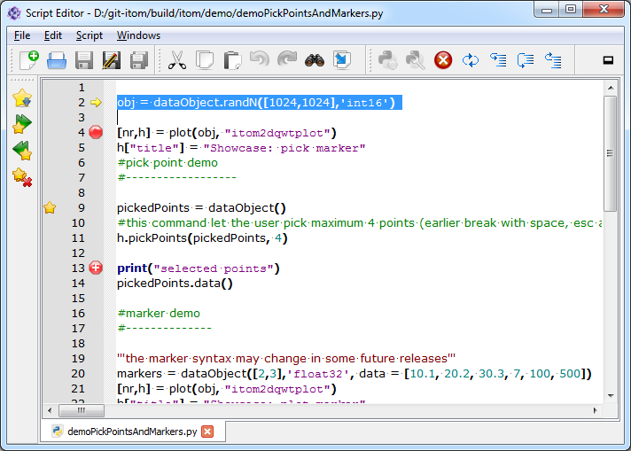
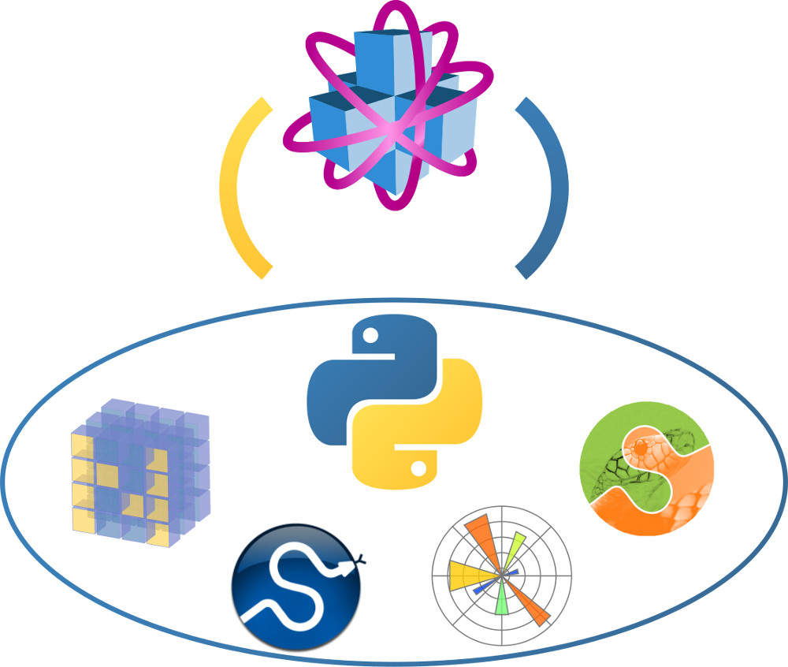

Python¶
ITOM is powered by Python!
Python is a universal programming language that lets you work very quick and more effective. The language is easy to learn and to use with lots of online tutorials to help you guide the way. Python on its own is an open source software development and improves over time by community support.
Powerful IDE¶
With ITOM, we have created one of the best and full featured Python IDE (Integrated Development Environment). The layout of itom’s GUI is simplicit and intuitively designed with a Command Console, File Explorer, Scripting Window, Command history, Variables and Help
{kind=link}
The Command console is for direct input and output of python commands. Additionally, the scripting window allows to create own scripts and offers tabs for browsing between several scripts. For writing and revising your programm code we have included syntax highlighting, auto completion, debugging possibilities, workspace introspection and much more… The IDE is highly customizable - Dark Theme, colors, fonts, indentation, dockable windows, etc.
{kind=link}
Python Packages¶
The embedded Python scripting language (version 3) allows you to use all functionalities that are provided by Python or other freely available packages as Numpy, Scipy or Matplotlib. Additionally, itom is connected to the Python scripting language by the package itom that acts as an interface to the core application as well as all its plugins. Further interesting packages for machine learning, image data processing and AI can easily be integrated with our package manager.
{kind=link}
Plugins¶
Plugins like Cameragrabbers and numerical filters are quickly and easily accessed with the Plugin-Window. A look in the plugin help always gives you the answer on how it works.